Next: Levenberg-Marquardt software
Up: Levenberg-Marquardt minimisation
Previous: Robust observations
Contents
The observation function 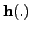 in Equation 5.7
does not encapsulate the most general
form of observation, since it assumes that the observation vector 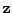
can be separated as a function of the state  . It is sometimes therefore
necessary to introduce a generalised observation of the form
. It is sometimes therefore
necessary to introduce a generalised observation of the form
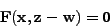
where 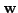 again represents a random noise vector having covariance  .
However with some manipulation and extra computation we can effectively
convert the linearised version of the 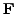-type function into an
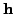-type function, allowing it to be incorporated in the same way.
We linearise 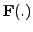 with respect to and around the
estimated state 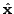 and observation , assuming
that the noise is small:
.
However with some manipulation and extra computation we can effectively
convert the linearised version of the 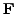-type function into an
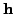-type function, allowing it to be incorporated in the same way.
We linearise 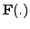 with respect to and around the
estimated state 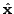 and observation , assuming
that the noise is small:
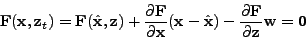
where here represents the true value of the state vector, and 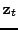
is the true observation vector (as opposed to the actually measured vector
), so that
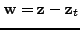.
We identify the following quantities with their equivalents for an -type
observation:
- The innovation vector is
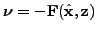.
- The Jacobian matrix is
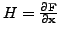.
- The noise vector is
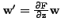.
- The noise covariance matrix is
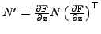.
Extra computation is therefore needed to convert the observation covariance
from to 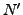. The innovation vector
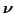, Jacobian matrix  and
observation covariance are substituted into the Levenberg-Marquardt
algorithm in place of their equivalents for the -type observation.
There is no reason why there should not be a robust version of the -type
observation, but currently it is not implemented.
and
observation covariance are substituted into the Levenberg-Marquardt
algorithm in place of their equivalents for the -type observation.
There is no reason why there should not be a robust version of the -type
observation, but currently it is not implemented.
Next: Levenberg-Marquardt software
Up: Levenberg-Marquardt minimisation
Previous: Robust observations
Contents
Philip McLauchlan
2009-01-27